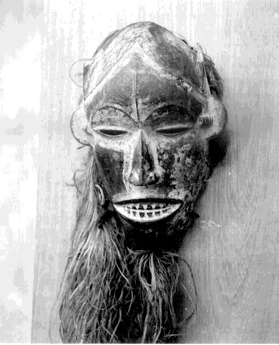

|
 |
Village
of Umuofia Character Roles
|
Okonkwo's Family:
Okonkwo
A great farmer and warrior and who achieved one of the highest titles in the clan through hard work and commitment to the community. You believe strongly in the value and justice of your village’s traditions.First_Wife
As Okonkwo's First Wife you are the honored companion of a tribal leader. You have junior wives in your compound who help you with the responsibilities of a large extended family. You have two sons and a daughter.Ekwefi
You are the second wife of Okonkwo. Your loyalty is to your husband, his first wife, and your daughter Ezinma.Ojiugo
You are the youngest wife of Okonkwo and have two senior wives. You are part of an important family in the village which provides for all of your material needs. Your daughter is Nkechi.Unoka
Father of Okonkwo, you are a lover of music and palm wine. You enjoy festivals and are not very successful growing yams.Nwoye
Your father is Okonkwo and your mother is his first wife. Your sister is Obiageli. Your father expects you to embody his attributes, industriousness and manliness.Ikemefuna
You are an adopted son of the tribal leader brought to Umuofia to settle a dispute. You are close friend to your adopted brother, Nwoye.Ezinma
You are the daughter of Okonkwo and Ekwefi.Obiageli
You are daughter of Okonkwo and his first wife, sister to Nwoye. You are very close to your mother, his second wife, and you enjoy the company of women in the compound.Nkechi
You are the daughter of Okonkwo and Ojiugo.
Citizens of Umuofia:
Obierika
Friend of Okonkwo, you are a high ranking member of the clan and a great farmer and warrior.
Maduku
You are the son of Obierka and a great wrestler and respected young man in the tribe.
Akueke
You are the daughter of Obierka, and soon to be married to Ibe.Ibe
You are a successful young man in the tribe seeking to marry Akueke.Ukegbu
You are a member of the sacred Egwugwu society and you support the religious traditions and values of the tribe. With your fellow society members you help enforce tribal laws and resolve problems. Your son is Ibe.Okagbue
You are the village medicine man and have a great knowledge of the history of the tribe and traditional healing methods.Ogbuefi_Ezendu
You are one of the oldest and wisest members of the tribe. You are always open to discussion, even with people with whom you do not agree. You were once a great warrior, but now value peace and the lives of tribal members above all.Ogbuefi_Ugouna
You are one of the highest titled men of the tribe, but you have cut your anklet to become Christian.Chielo
You are the priestess of the Agbala, the oracle of the hills and caves. Most of the time you are a widow of one of the members of the village, but at certain times you are called to be an oracle of the gods. You are honored by your important role in the religion of the tribe.Nwakibie
You are a successful yam farmer -- you loaned yams to Okonkwo to help him get started.Anasi
Wife of Nwakibie.Nwayieke
You are a much respected older woman in the tribe.Obiako
You are a palm wine tapper; you gather palm tree sap and carefully ferment to create wine -- an important person for any celebration or festival.Village Crier
Your walk through the village beating an Ogene gong and shouting the news.Osu
You and your family are considered “untouchable” and must always do the dirtiest and hardest work in the village. You have accepted this position, but...Enoch
You are a zealous convert to Christianity and killed Umuofia's sacred python.
Citizens of Mbanta:
Uchendu
You are Okonkwo's wise uncle who graciously receives him in Mbanta.Amikwu
You are the son of Uchendu and live in Mbanta.
Njide
You are the daughter of Uchendu and live in Mbanta.
Okoli
You live in Mbanta, are an Osu, and an active convert to the Christian religion; you killed your village's sacred Python.
Umunna
You are the oldest man in the village of Mbanta.
Nneka
You are a pregnant woman who has several times given birth to twins in the past -- you were forced to leave your previous children in the evil forest.
Africans from other Villages:
Ozoemena
You are a female survivor of the village of Abame. After a white man on a bicycle was killed, the British army came to your village on Eke market day, surrounded it and began to fire their terrible repeating guns into the crowd. You have come to warn Umuofia and Mbanta of the dangers of the British.Mr. Kiaga
You are Ibo from Umuru, a village near the sea, and an early convert to Christianity. You have come to the village of Mbanta to bring others to your faith.Akunna
You are a great man from another village who talks extensively with Mr._Brown about religion.Kotma and Ashy-Buttocks
You are court messangers from Umuru, a tribe near the coast that speaks a somewhat different dialect from the people of Umuofia. Your village was one of the first colonized by the British and you have worked hard to learn to speak and write English. You realize that from now forward the British will have supreme military and political power in the country. You work for the District Commissioner and will do what is necessary to keep your position.
British
Mr._Brown
You are a liberal Christian Missionary and have dedicated your life to bringing Africans to Christianity. You respect them as people and you hope to help them understand by reasonable argument and education that their beliefs are superstitious.Mr._Green
You are a fundamentalist missionary and have dedicated your life to saving heathens from eternal damnation. You consider their beliefs to be ignorant and unbiblical, and you wonder whether anyone who has once had such beliefs can ever be trusted, especially in positions of church leadership.District Commissioner
You are an officer of the British Army who has been given authority over the Lower Niger region. You hope is to pacify African resistance to the British. You support the work of missionaries converting these primitive people. You have court messengers who work for you, and, if needed, you can request support from the British army occupying the country.
Return to Village of Umuofia Home Page